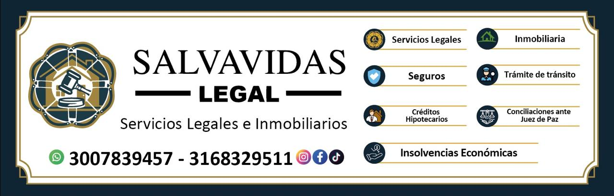

Servicios Legales e Inmobiliarios
Asesoría y acompañamiento jurídico profesional para proteger tus derechos e intereses.
Solicitar AsesoríaEn Salvavidas Legal brindamos acompañamiento jurídico personalizado, buscando soluciones claras y efectivas para cada situación.
Orientación profesional para analizar tu situación, conocer tus derechos y encontrar alternativas legales.
Revisión, elaboración y orientación sobre contratos para ayudarte a tomar decisiones con mayor seguridad.
Acompañamiento jurídico en diferentes situaciones relacionadas con obligaciones, conflictos y procesos civiles.
Orientación jurídica en asuntos relacionados con familia y protección de los derechos de sus integrantes.
Asesoría para la gestión y recuperación de obligaciones pendientes de pago mediante alternativas legales.
Analizamos cada caso de manera personalizada para determinar la mejor alternativa jurídica.
Atención personalizada
Orientación profesional
Acompañamiento durante el proceso
📞 Teléfono / WhatsApp: 317 636 0337
📍 Dirección: Cra 90 # 146B - 39
✉️ Correo: casti12llo@hotmail.com
Contactar por WhatsApp